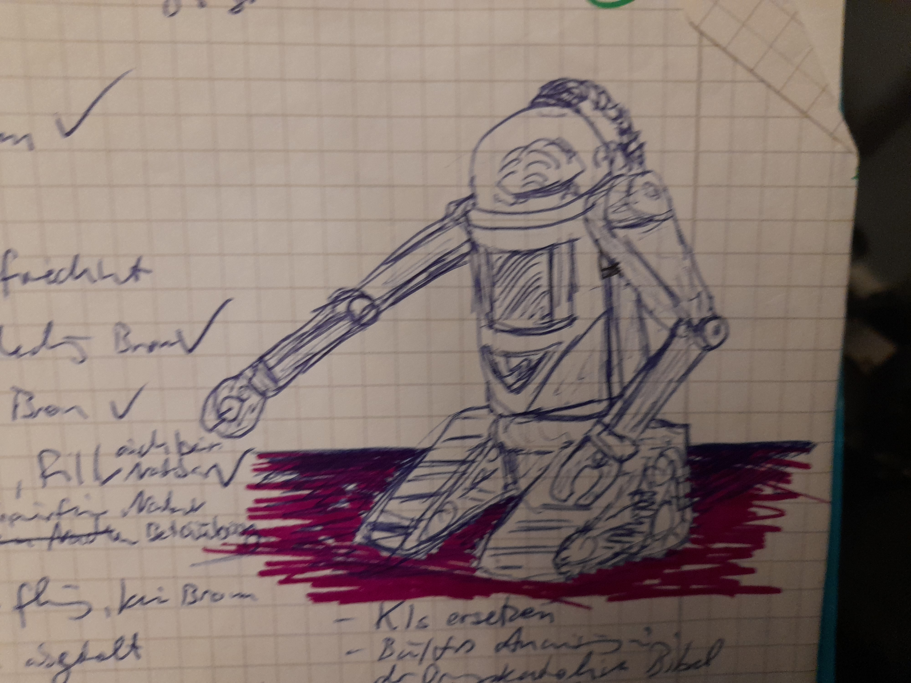

Technologien
Anzug
Draussen brauchst Du immer einen Anzug. Ein Anzug besteht aus:
- Helm
- Anzug mit Brust- und Hinterklett
- Unterzeug
- Halssträmmlung
- Ventil
- Filter
- Stiefel
Hebroboto
 Ein Arbeitgerät in Form eines Exoskeletts. Es gibt sie in verschiedenen Grössen, je nach auszuführender Arbeit und wie s

Fernunterhalt
Barriere-Schiffe
Nicht-Schiff / Unwahrscheinlichkeits-Tarnung
Modularfaust
Entkörperungs-Technologie
Unwahrscheinlichkeits-Bombe
Geht auf Pluto nieder, Axolotl befallen massiv die Plutonier